Highlight For the EU27 in all baseline scenarios the amount of land needed for agriculture will decline. Decline of the agricultural area in the EU10 is in general smaller
than in the EU15. In the liberalized scenarios Global Economy and Global
Cooperation the EU10 reacts with an increase of agricultural area whereas
in the EU15 the area declines more rapidly. So both regions react differently.
More CAP support leads to a larger area of agricultural land-use.
Perhaps it is better to say to a less decline of agricultural area for
the Global Economy, Regional Communities and Global Coordination scenarios.
|
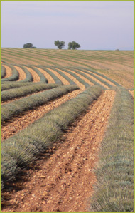 |
Stimulation of bio-energy crop production leads to more agricultural area. In the Global Economy and the Regional Communities this effect is most visible and about 0.15% per year for the EU12. The impact in the EU15 is smaller. In the Global Coordination scenario the bio-energy directive does not lead to an overall increase of agricultural land although the share of bio-energy crops do increase.
Past developments
Agricultural area in the EU is declining already many decades. This is mainly
driven by a rather stable demand for agricultural products combined with ongoing
improvements in yield per hectare. Less and less land is needed to maintain
production levels. Even under considerably protected circumstances in the EU
the agricultural area of the EU has diminished with 13% since the 1960s.
Future developments
Changes in land use are triggered by different drivers, like economic growth
and population growth, changes in the global agricultural economy like market
protection or domestic support or by developments within the agricultural sector
such as increasing efficiency and the introduction of new products like bio-energy
crops.
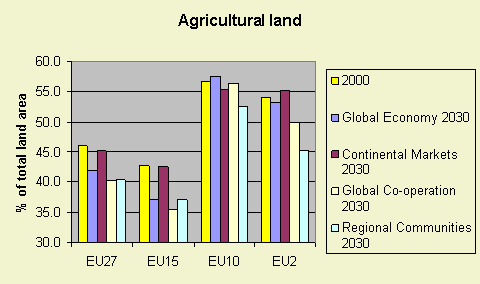
Figure 1a - development of area of agriculture for
4 baseline scenarios towards 2030
Figure 1a shows that the total amount of agricultural land is declining for
all scenarios. Although in the Continental Market (A2) scenario the agricultural
area for the European Union is almost stable. This is due to the combination
of the high population growth, the moderate economic growth with a relatively
low agricultural efficiency and the Transatlantic Market conditions. The other
three Eururalis baseline scenarios show a decrease of crop area in the European
region in the coming decades. The Regional Communities (B2) scenario, which
is the scenario with the lowest economic growth and highest market protection,
predicts the largest decrease in crop area for the EU10 and EU2. For the EU15
the Global Cooperation (B1) scenario gives a slightly larger decrease in crop
area. Apparently, the negative effect of relatively low economic growth in the
Regional Communities scenario is more dominant than the positive effect of market
protection for the EU12.
The agricultural area in the EU2 is highest in the Continental Market scenario. In EU10 most agricultural land is used in the Global Economy scenario; it even shows an increase in this scenario.
The change of agricultural land is more modest in the EU10 than in the EU15.
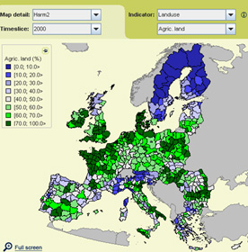
Figure 1b - overview of pattern for agricultural land
in the EU27.
Arable land
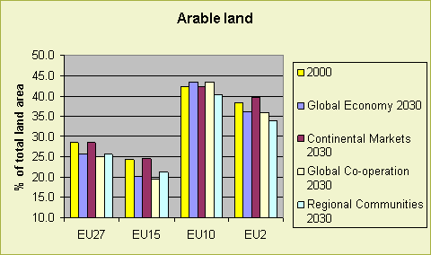
Figure 2a - arable land for 4 baseline scenarios towards
2030
Figure 2a shows that arable land comprises the largest part of all agricultural
land. It also illustrates that the changes in arable land are in the same line
as the changes in total agricultural land.
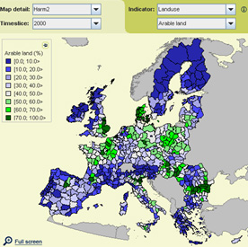
Figure 2b - spatial distribution of arable land
Pasture land
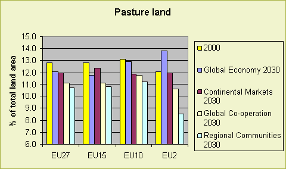
Figure 3a - pasture land for the 4 baseline scenarios
towards 2030
For pasture land in the Global Economy scenario it is apparent that the trend
in EU2 shows a large increase while the other regions show a decrease. In total
there is a decrease of pasture land in all scenarios. The EU10 and the EU2 show
an increase of pasture land in the Global Economy scenario. Striking is the
difference between the opposite way the Global Economy and the Continental Market
scenarios play out. The new member states will see an increase of land in an
open Global Economy world whereas the old members than will see a stronger decrease
of pasture land.
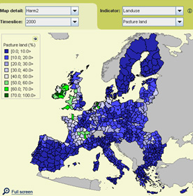
Figure 3b - spatial distribution of permanent pasture.
Figure 3b illustrates that permanent pastures are mainly to be found in Ireland,
The Netherlands, Wales and England and parts of France.
Policy impact of the bio-energy directive
Figure 4 shows the average changes in crop area growth for the baseline scenarios
with and without bio-fuels for the time period 2000 to 2030. Note that the effects
of introducing bio-fuels on change of crop area are small only in tenth of percents
on average growth over the period of 2000 to 2030.
The introduction of bio-fuels results in larger crops areas in the European region in all scenarios except for the EU12 in the Global Co-operation Scenario where the crop area remains the same. Both for EU15 and EU12 the high growth and globalisation of the Global Economy is a dominant positive effect as well as the market protection of the Continental Market. These are the scenario’s in which the effect of the first generation of biofuels is the largest.
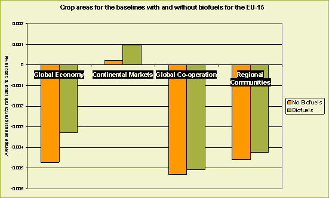
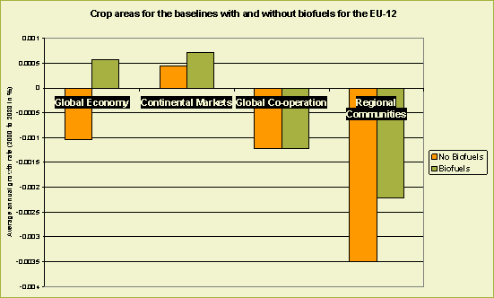
Figure 4 - predicted changes in crop area for the baseline
scenarios without (E1) and with (E2) the first generation bio-fuels for EU15
(above) and the EU12 (below)
Policy impact of CAP
Another point of interest is the influence of CAP options on crop area changes
in Europe. The predicted effects are of the same order of magnitude as the effects
resulting from the introduction of bio-fuels, thus tenths of percents of average
growth.
In figure 5, the average crop area growth changes for different policy variants are visualized for the different scenarios. Generally the variants with more market protection and domestic support result in larger crops areas than the variants of the same scenario with less protection.
In figure 5 you can compare the effects of protection within one scenario. Moving
from left to right means increasing protection, although there are two effects: market
market protection and income support.
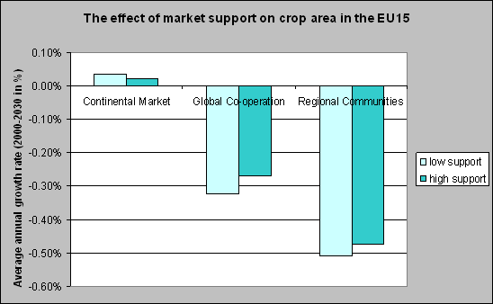
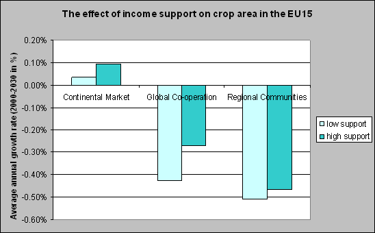
Figure 5. Predicted influence of CAP-policies for different
scenario variants for EU15 (above) and EU12 (below).